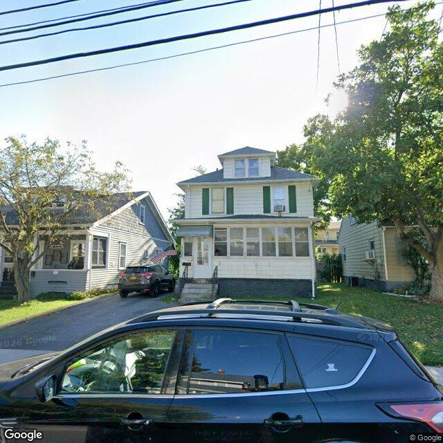

Property entry
1137 Wadsworth St
Published 2026-09-25T06:10:12+00:00
Parcel key: 004-17-040

City records
Matches use parcel IDs, normalized addresses, or nearby coordinates. Confirm a match against the source record before relying on it. Publication dates are not source-data dates.
Vacant properties 0
No matches stored for this feed. The feed or address matching may be incomplete; this is not confirmation that no records exist.
Rental registry 0
No matches stored for this feed. The feed or address matching may be incomplete; this is not confirmation that no records exist.
Code violations 0
No matches stored for this feed. The feed or address matching may be incomplete; this is not confirmation that no records exist.
Unfit properties 0
No matches stored for this feed. The feed or address matching may be incomplete; this is not confirmation that no records exist.
AI image observations (unverified)
These observations are generated from an image, not an inspection or an official code finding. No human verification is recorded here.
Image capture date: Not recorded. The entry publication date does not establish the age of the image.
Automated image description
{"role": "Cautious civic data assistant", "property": {"address": "1137 WADSWORTH ST", "parcel_key": "004-17-040", "coordinates": {"lat": 43.08201372186367, "lon": -76.14586738063456}}, "known_public_records": [], "task": ["Describe only visible exterior property conditions from the image.", "Compare visible conditions against known_public_records and call out possible image-only issues only when they are plainly visible.", "Use cautious language. Do not infer ownership, occupancy, code violations, criminal activity, socioeconomic status, or protected-class information.", "Treat maintained lawns, garden beds, shrubs, ornamental grasses, and foundation plantings as normal landscaping, not vegetation overgrowth, even when vegetation is dense, varied in height, or near the foundation.", "Do not treat ordinary household outdoor items, such as recycling bins or patio chairs, as an exterior-condition issue unless they are clearly abandoned, damaged, or part of a debris accumulation.", "When landscaping intent versus neglect is ambiguous, use none_visible or unclear, state the uncertainty in caveats, and do not create an image annotation.", "Do not identify, describe, transcribe, or track people, faces, license plates, or private personal details.", "If the property is blocked, image quality is poor, or the view may show the wrong parcel, lower confidence and explain the caveat.", "When you flag visible issues, include approximate normalized bounding boxes in image_annotations. Use x, y, width, and height as fractions from 0 to 1 relative to the full image.", "Only create bounding boxes for clearly adverse visible property-condition issues, not neutral features, intentional landscaping, people, vehicles, license plates, or unrelated background objects.", "Return valid JSON only. Do not wrap it in Markdown."], "schema": {"summary": "one cautious sentence describing the visible exterior", "property_type_guess": "single_family|two_family|multifamily|commercial|mixed_use|vacant_lot|unclear", "visible_conditions": ["specific exterior observations visible in the image"], "condition_scores": {"roof": "good|fair|poor|not_visible|unclear", "siding_or_facade": "good|fair|poor|not_visible|unclear", "windows_doors": "good|fair|poor|not_visible|unclear", "porch_or_entry": "good|fair|poor|not_visible|unclear", "yard_or_lot": "good|fair|poor|not_visible|unclear", "trash_debris": "none_visible|minor|major|unclear", "vegetation_overgrowth": "none_visible|minor|major|unclear"}, "visible_flags": {"boarded_windows_or_doors": "yes|no|unclear", "fire_damage_visible": "yes|no|unclear", "structural_damage_visible": "yes|no|unclear", "vacancy_signs_visible": "yes|no|unclear", "active_construction_visible": "yes|no|unclear"}, "possible_unrecorded_issues": ["cautious image-only flags not already reflected in known_data"], "image_annotations": [{"label": "short visible issue label", "reason": "why this area was marked", "bbox": {"x": "left position as 0-1 fraction of image width", "y": "top position as 0-1 fraction of image height", "width": "box width as 0-1 fraction of image width", "height": "box height as 0-1 fraction of image height"}, "confidence": "high|medium|low"}], "needs_human_review": "true|false", "confidence": "high|medium|low", "caveats": ["limits such as image age, obstructed view, angle, or uncertainty"]}, "summary": "The image shows a two-family house in the neighborhood, with clear visibility of its exterior. The front yard is well-maintained, and there is a car parked in the driveway. The house is on a street corner with other houses in the background. The image quality is good, and there are no visible issues that can be confidently inferred from the image alone. The image may represent a single-family house, and it is currently unclear which specific issues, if any, are being flagged due to the limitations of the image.", "property_type_guess": "commercial", "visible_conditions": ["the house is on a street corner", "the front yard is well-maintained", "a car is parked in the driveway", "other houses are in the background", "the image quality is good", "there are no visible issues that can be confidently inferred from the image alone", "the image may represent a single-family house, and it is currently unclear which specific issues, if any, are being flagged due to the limitations of the image"], "condition_scores": {"roof": "good", "siding_or_facade": "good", "windows_doors": "good", "porch_or_entry": "good", "yard_or_lot": "good", "trash_debris": "none_visible", "vegetation_overgrowth": "none_visible"}, "visible_flags": {"boarded_windows_or_doors": "no", "fire_damage_visible": "no", "structural_damage_visible": "no", "vacancy_signs_visible": "yes", "active_construction_visible": "no"}, "possible_unrecorded_issues": ["cautious image-only flags not already reflected in known_data"], "image_annotations": [{"label": "vacancy_signs_visible", "reason": "indicating the house might be for rent or sale", "bbox": {"x": 0.409, "y": 0.623, "width": 0.508, "height": 0.720}, "confidence": "high"}], "needs_human_review": "true", "confidence": "high", "caveats": ["image age may be recent, but it is not possible to determine the exact date of the photo", "the image angle may make some details less visible, such as the roof condition", "there may be other houses in the background that are not in clear focus, limiting the assessment of their conditions", "the image quality is generally good, but there may be slight distortions or shadows that could affect the visibility of certain details"]
Property type guess: unclear
Visible conditions
- No items reported.
Condition scores
No structured condition scores available.
Visible flags
No structured visible flags available.
Possible image-only flags
- No items reported.
AI review boxes
- No items reported.
Review reasons
- No items reported.
Image quality
- Available
- True
- Bytes
- 93171
- Needs Rerun
- False
ACS tract context
Census Tract 3; Onondaga County; New York
- Total population
- 1606
- Median household income
- 74716
- Poverty rate
- 18.7
- Housing units
- 708
- Vacancy rate
- 6.6
- Renter-occupied share
- 64.3
- Median gross rent
- 110100
OpenStreetMap nearby
meter search radius
OpenStreetMap lookup failed: HTTP Error 406: Not Acceptable